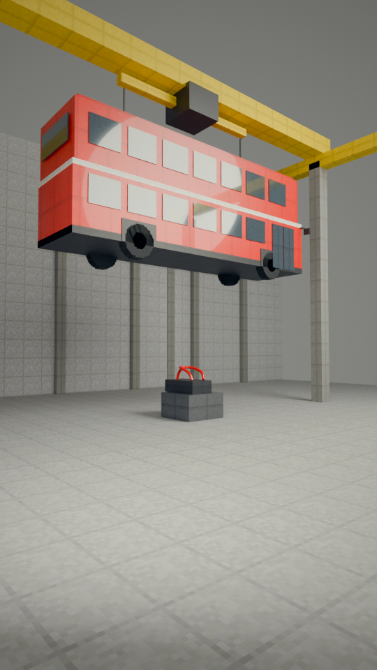
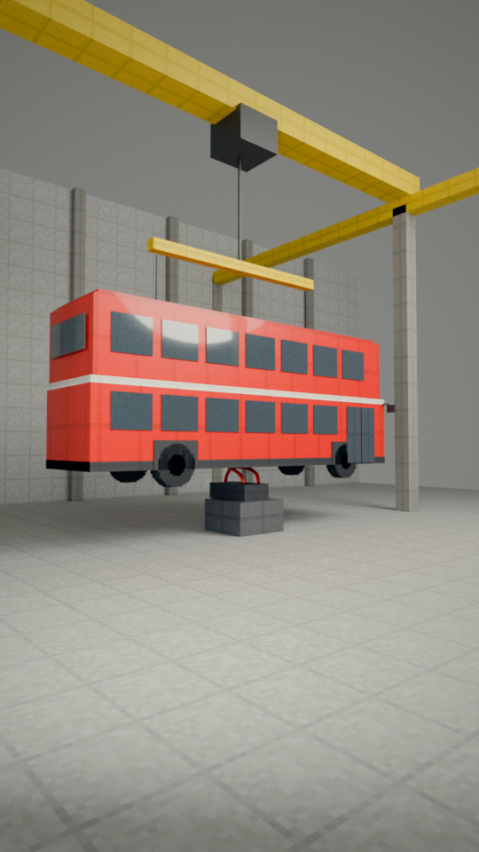
“a double-decker bus. In”
In a hangar, a crane lowers a red double-decker bus onto the halo. It holds.
collision check: clean

“Bahrain in 2020, Romain”
Bahrain 2020, lap 1 at night: the pack under the floodlights, Grosjean's white car among them.
collision check: clean
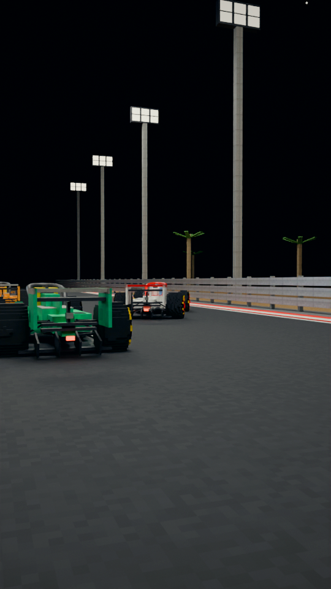
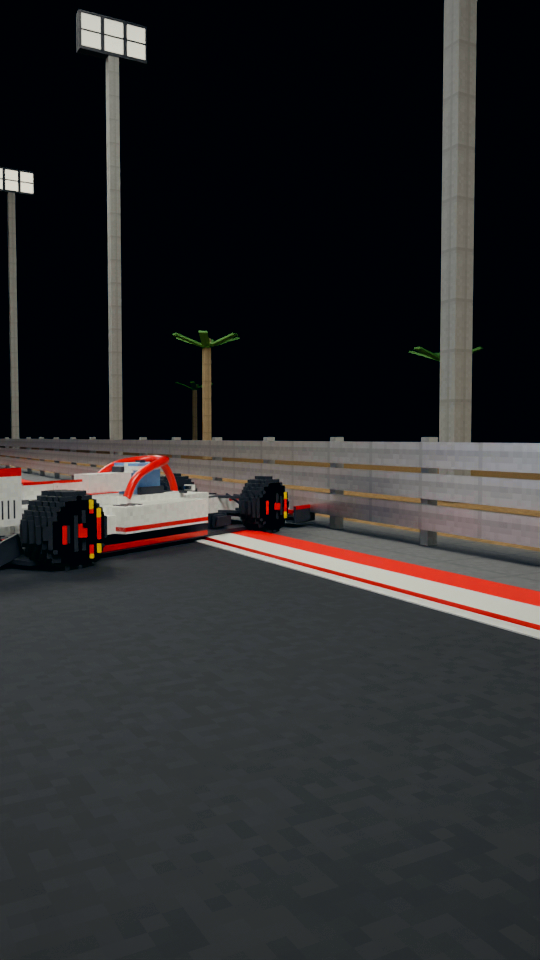
“Grosjean hit a steel barrier at nearly 200 kilometres an hour.”
Flat out, the white car veers right across the track - and hits the steel barrier.
collision check: clean
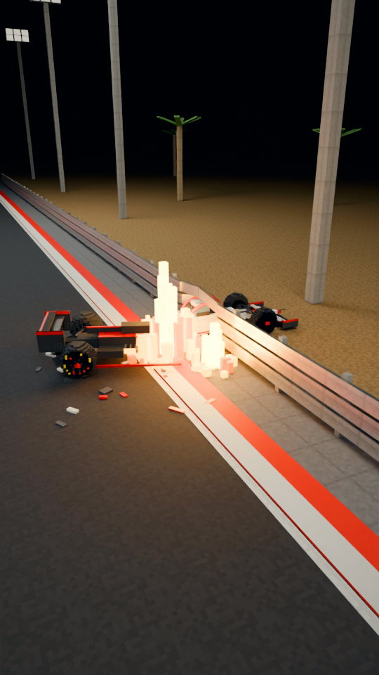
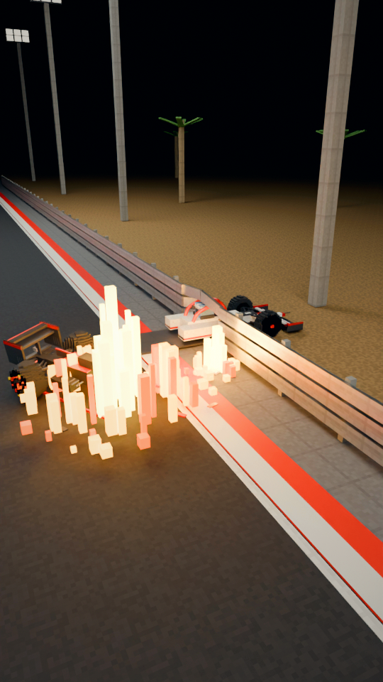
“His car split in two and burst into flames.”
From above: the car tears in two - the front half through the barrier, the back half spinning away and catching fire.
collision check: clean

“The halo shielded his head as the car tore through the steel.”
Close: the front half through the barrier; the top rail rides up over the halo instead of into the helmet.
collision check: clean
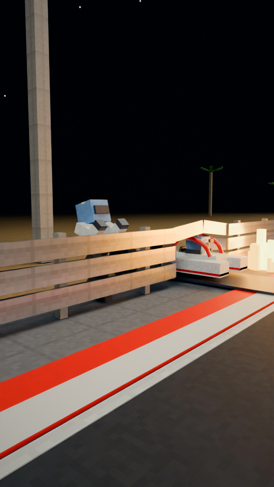
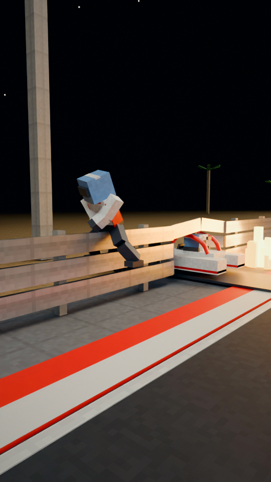
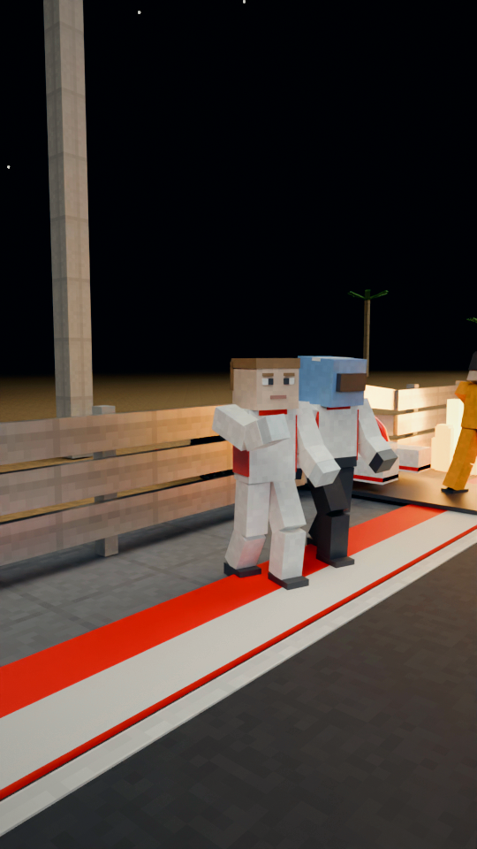
“Nearly half a minute later, he climbed out of the fire.”
He climbs out: hands over the top rail and a knee coming up, then astride the barrier, then down on the track side, a medic beside him, a marshal on the fire.
collision check: clean

“Grosjean had doubted it.”
2018, in the garage: Grosjean sizes up the new halo, hand under his chin.
collision check: clean

“Now he called it the greatest thing F1 had brought in.”
The halo on a plinth under a spotlight, shown like a trophy.
collision check: clean
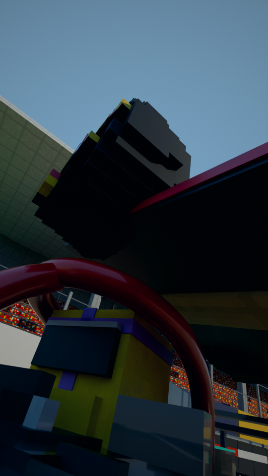
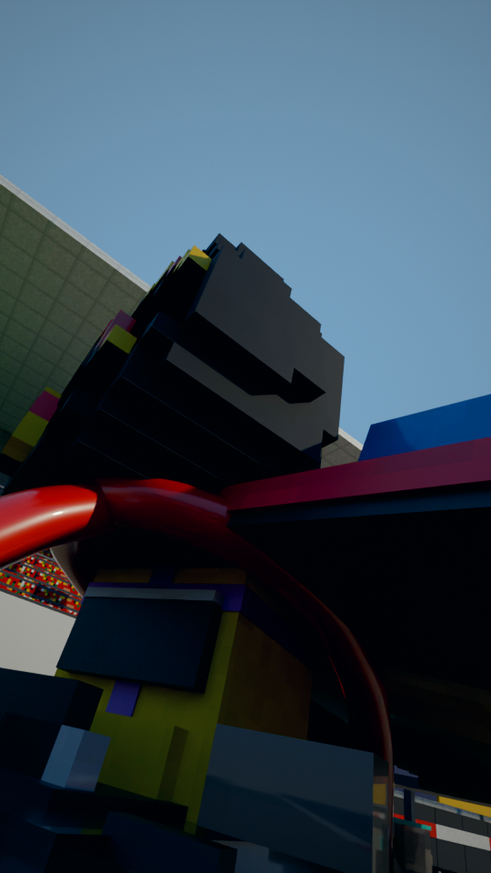
“Back at Monza, Verstappen's rear tyre hit Hamilton's helmet,”
Back at Monza, from low beside the helmet, tilted: the rear tyre comes down onto the halo.
collision check: clean
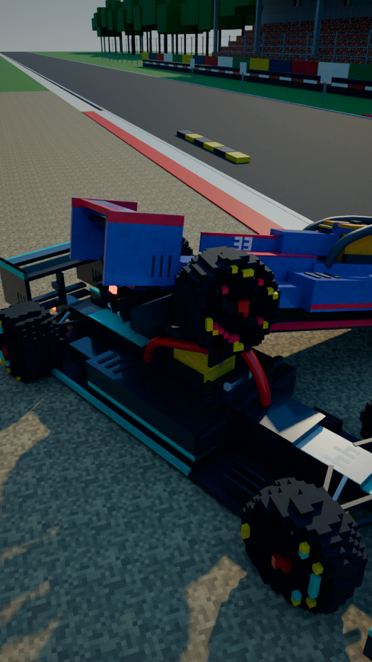
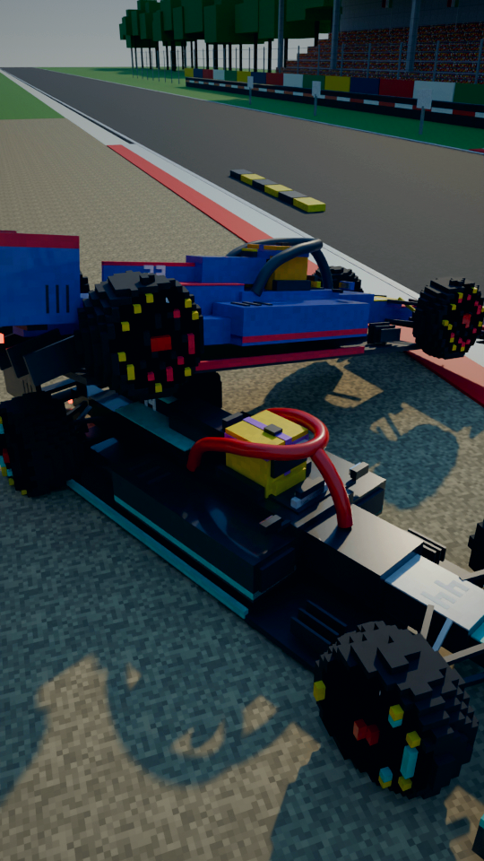
“and the halo pushed it off. Hamilton”
From above: the tyre on the hoop, then deflected off it onto the engine cover - away from his head.
collision check: clean

“said it saved his neck. His”
Hamilton, helmet in hand, by the wreck in the gravel: hand to his neck.
collision check: clean